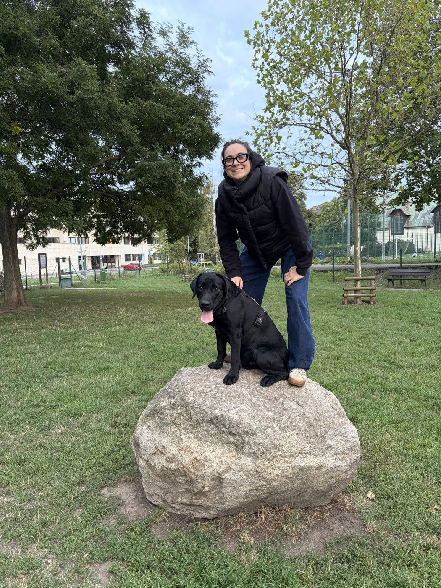

Sound & making · Prague
Delayed
All the Time
Five real days of Prague public transport, played as disco by the transport system itself. The metro is the kick drum; the buses go out of tune exactly as far as they run late.
Photo: Yannick Loriot · CC BY 2.0

Photo: Gerd Eichmann · CC BY-SA 4.0, colour held

Master's thesis · IES Director's Award 2026
Persistence
On 121 million vehicle-location records from Prague, delays are persistent, the persistence sits in a state a traveller can watch, and standard appraisal overstates the cost of unreliability.
Photo: Draceane · CC BY-SA 4.0, colour held
.jpg){kind=link}
Now
live · no server, six scheduled jobs

About
Data & cloud engineer by day. After hours, a cartographer without a licence.
At Alma Career in Prague: a cross-cloud data platform, the code that provisions it and LLM systems over the warehouse that get measured before they get trusted. Before that, production ML at Golemio and forensic analytics at EY. Thesis on Prague transit delays, IES Director's Award, 2026. Lives with Varinka and Largo, surfs in Portugal when the forecast allows. CV
All work
- Does alignment pay in PraguePrague, measured2026
- Bigger cars, the same kerbPrague, measured2026
- Prague's homes, measured againPrague, measured2026
- Who says no in PraguePrague, measured2026
- Place or people: Prague's estates, measured againPrague, measured2026
- Prague builds two homes for Vienna's threePrague, measured2026
- One city, 57 budgetsPrague, measured2026
- Prague votes in rings, not along linesPrague, measured2026
- Prague's council rarely says noPrague, measured2026
- Persistence Dynamics and Welfare Costs of Transit DelaysThesis · award2026
- How many parking spaces Prague lostData science2026
- Parking II: the fleet, measuredData science2026
- Parking III: count, not sizeData science2026
- Player Pool Atlas · hockeySport2026
- Player Pool Atlas · footballSport2026
- QuaesitorML & AI2026
- Can a wrong number be seen coming?ML & AI2026
- Brand Reflection SeriesClaims, checked2026
- The label says deterioratingClaims, checked2026
- A wiki that an agent keepsML & AI2026
- How to catch a fabricated quoteData engineering2026
- Ask the site. It shows its work.Live2026
- An agent that shows its workData engineering2026
- How to prove a cutoverData engineering2026
- What the work was read againstLibrary2026
- Model release watchMonthly · livelive
- Not worth the flightForecasts, verifiedlive
- Weather, checkedForecasts, verifiedlive
- The Atlantic, playedSound & makinglive
- Six jobs, no serverLivelive
- Delayed All the TimeSound & making2025
- FilmRunner · the living call sheetBuilt to be used2025
- AI over data, measuredBy day2025
- The platform is code. So is the trust.By day2021